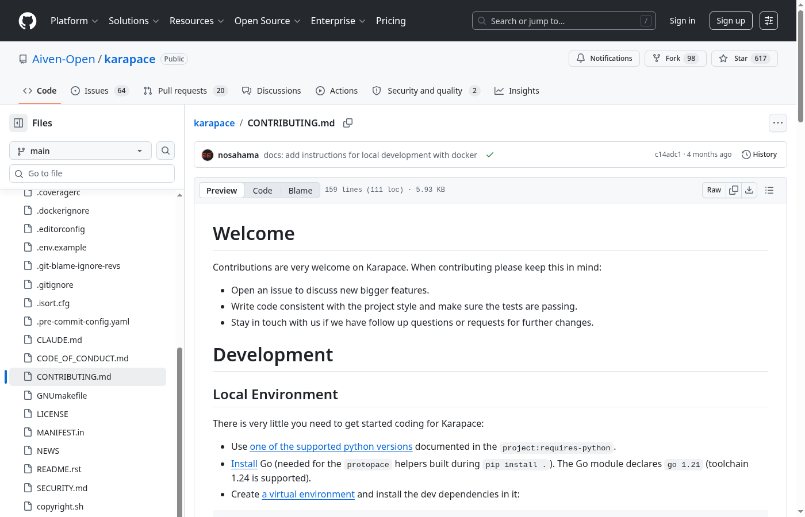
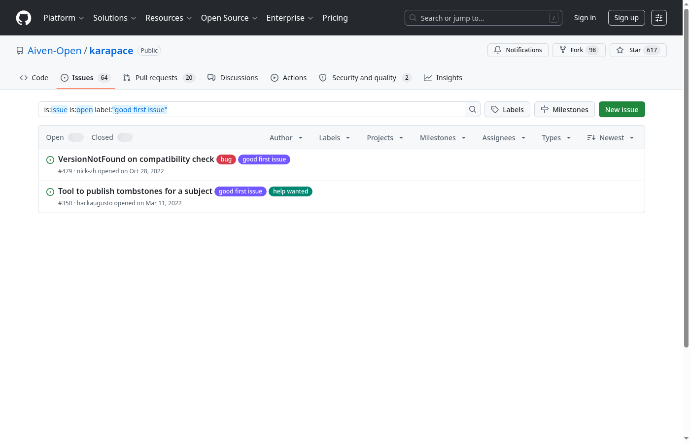
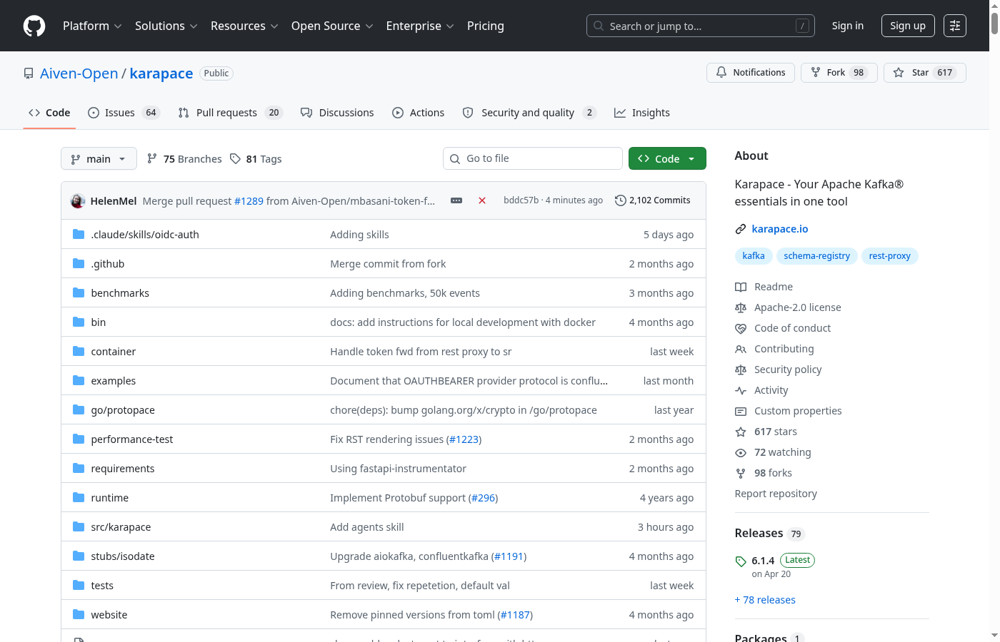
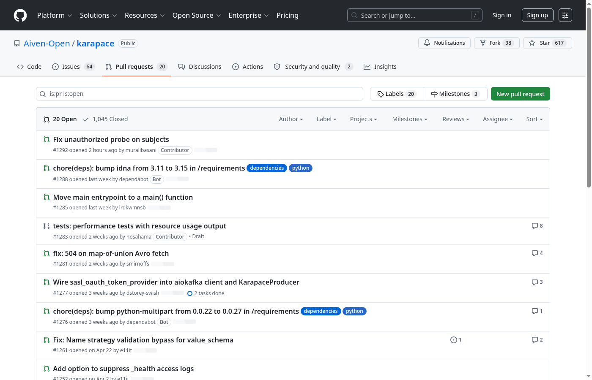
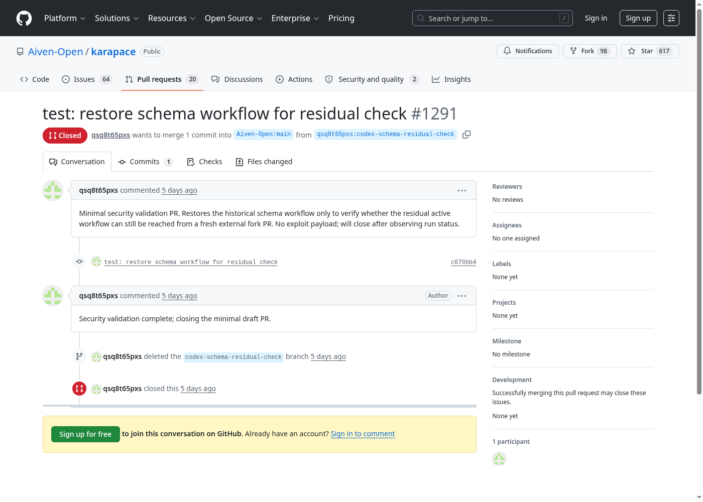
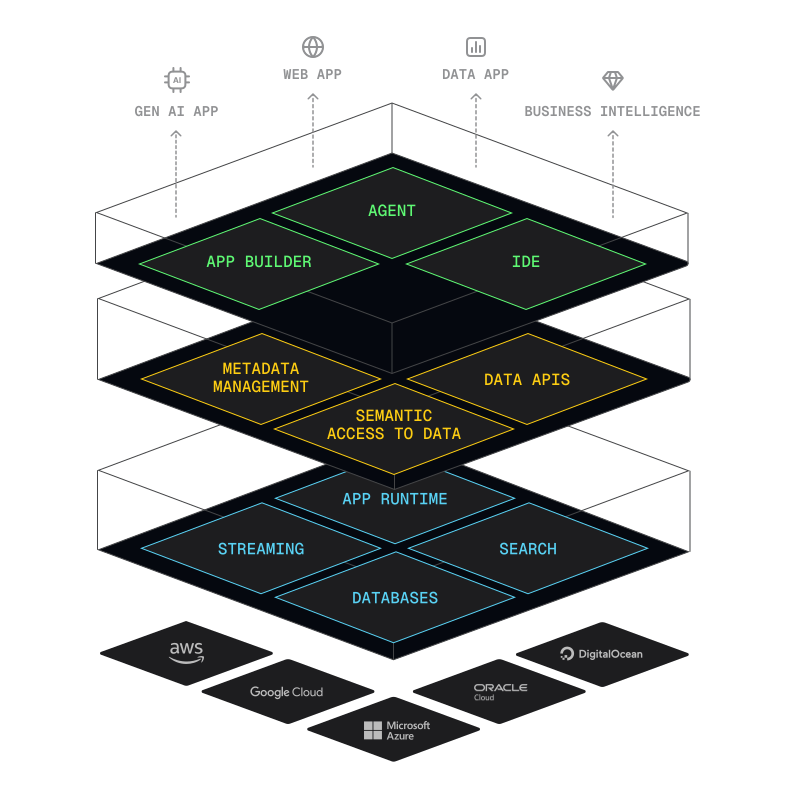

Open Source: is computer software that is released under a license in which the copyright holder grants users the rights to use, study, change, and distribute the software and its source code to anyone and for any purpose.
A license is the legal contract between the project creators and its end user.
Licenses in Open Source are used to define the distribution mechanisms, liability, limitations of warranty, including protection of the developer's intellectual property.
Apache-2.0MITGPL-3.0 (and derivatives)No restriction on how the software should be used.
Derived works are allowed.
Source code is distributed with the program (or library).
Software can be sold or given away.
Couchbase and MongoDB restrict usage in some way via license change, while Chrome builds on Chromium the extra parts are not open source.
Legalities cleared, Open Source is about community: collaboration, and working with others to reach something bigger.
No no! Anyone can contribute to Open Source. One doesn't need to be an expert on a topic!
pull requests are incorporated into the project
Find out your current strengths, but also what you want to improve or learn!
Ideally, you should come up with your goals as well.
Short list some projects, and try to rank them by community friendliness.
Some factors that hint at a good community:
issues AND pull requestspull requests not too high nor too low (on the "tens")Look for LICENSE or LICENSE.md. It contains the license of the project. Make sure it's an open source one.
On GitHub, README.md is displayed by default. It should be descriptive and explain the
project.
Recent addition to projects. CODE_OF_CONDUCT.md is the contract from the project's leadership towards the community in
regards to behaviors that are not tolerated.
The most common one is the Contributor Covenant.
Read CONTRIBUTING.md before you open your first pull request.

Comment on an issue before you start. Look for labels such as good first issue or help wanted.

Issues on GitHub
Click Fork on GitHub to create your own copy to push branches from.

git clone your fork on your machinegit checkout -b to create a new branchWrite the feature, or fix the bug. And don't forget about writing tests! Check if you need to run linters or style checkers.
git commit your work frequently!
CONTRIBUTING.mdAfter git push, open a pull request from your fork into the upstream repository.

GitHub also offers a Compare & pull request banner right after you push.
Maintainers will comment on your changes. Address feedback and push updates to the same branch.

Many projects require 1 or 2 maintainer approvals (LGTM) before merge.
PR!It's not only about coding! Contributing to Open Source is also:
issuesPRsSometimes projects might require a CLA or DCO before you can contribute.
A CLA (Contributor License Agreement) is a legal document to be (digitally) signed. It's usually done when the
project owners want more rights than the ones the license already grants. This might mean they want the full
copyright of the project or they want to dual license the project.
An example is the Apache ICLA
A DCO (Developer Certificate
of Origin) is a statement that you do have the rights to contribute that code.
Many projects ask for a Signed-off-by line in commit messages.
Yes! The question should not be if they use it, but how much.
Directly or indirectly, every workplace uses OSS.
There are 2 main ways:
This is the most common case of outbound contributions from corporations.
Why not keep it private and sell it? Some reasons might include:
It depends. You need to review your contract and talk to your manager, and usually you'd need some convincing.
When it's not part of the core business, or open source collaborations main purpose are marketing or talent acquisition, budget comes from said parts of the company.
One can sell prepackaged solutions of open source projects.
Specific requirements will take precedence for customers with support.
Open Source projects are really specialized and they need a high degree of experience to operate them. This caused the proliferation of "as a Service" companies (PaaS, SaaS, IaaS, …)

Corporations and Open Source can collaborate and both benefit from it. It's not a zero-sum game!
Aiven offers free plans for Apache Kafka, PostgreSQL, MySQL and ValKey!
Read more here!
Use this link: Extra Credits!
And get up to $400 to spin up your clusters.
Josep Prat — @jlprat — @aiven_io